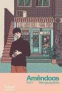
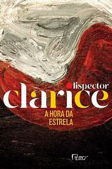
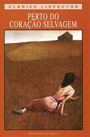

Nesta página você encontrará ánalises detalhadas e imparciais sobre uma variedades de livros que despertam interesses e curiosidades. Nossas resenhas oferecem uma visão crítica e aprofundada.
Amêndoas
Por Won Pyung Sohn em 31 de março 2023
"Amêndoas" de Won Pyung Sohn é um romance comovente e introspectivo que aborda temas de identidade, empatia e superação através da história de um jovem chamado Yunjae. Nascido com alexitimia, uma condição que o impede de reconhecer e expressar emoções, Yunjae enfrenta dificuldades em se conectar com os outros e compreender o mundo ao seu redor.
A narrativa é centrada na vida de Yunjae, desde a infância até a adolescência, e sua luta para navegar por um mundo que muitas vezes é confuso e hostil para alguém com sua condição. A relação próxima com sua mãe e sua avó, que o ajudam a lidar com sua diferença, é interrompida tragicamente, deixando Yunjae ainda mais isolado. No entanto, a chegada de novos personagens em sua vida, como Gon, um garoto problemático, e Dora, uma garota peculiar, desafia e enriquece sua compreensão de si mesmo e dos outros.
Um dos aspectos mais fortes do livro é a sua capacidade de despertar reflexões profundas sobre a natureza da empatia e a importância das conexões humanas. A amizade improvável entre Yunjae e Gon é particularmente significativa, mostrando como duas pessoas com histórias de vida tão diferentes podem se ajudar a crescer e a se entender melhor. A presença de Dora adiciona uma camada adicional de complexidade e ternura à história, reforçando a mensagem de que a verdadeira compreensão e aceitação vêm do coração.
No entanto, algumas críticas podem ser feitas. Por exemplo, o desenvolvimento de personagens secundários, como Gon, poderia ter sido mais aprofundado para enriquecer ainda mais a narrativa. Além disso, alguns leitores podem sentir que a resolução de certos conflitos na trama é um tanto apressada, não permitindo uma exploração mais profunda das implicações emocionais e psicológicas desses eventos.
"Amêndoas" é uma leitura poderosa e tocante, que não só ilumina a experiência de viver com uma condição neurológica rara, mas também celebra a capacidade de adaptação e resiliência humana. Won Pyung Sohn oferece uma narrativa que é ao mesmo tempo profundamente pessoal e universal, fazendo com que os leitores reconsiderem suas próprias percepções sobre emoções e relacionamentos. É um livro que ressoa profundamente e deixa uma impressão duradoura.
Antes que o café esfrie

por Toshikazu Kawaguchi em 15 de abril de 2022
"Antes que o Café Esfrie" de Toshikazu Kawaguchi é uma obra encantadora e contemplativa que mistura elementos de fantasia e drama humano de maneira delicada. O livro se passa em uma pequena e misteriosa cafeteria em Tóquio, onde os clientes têm a rara oportunidade de viajar no tempo, mas com uma série de regras estritas, a mais crucial sendo que devem retornar antes que o café esfrie.
A narrativa é estruturada em quatro histórias interconectadas, cada uma explorando as vidas e os desejos dos personagens que frequentam a cafeteria. Cada história revela camadas de emoções e arrependimentos, abordando temas universais como amor, perda e redenção. O enredo é conduzido por uma prosa simples, mas profundamente evocativa, que permite aos leitores se conectar profundamente com as emoções dos personagens.
A premissa do livro, embora fantástica, é tratada com uma sutileza que a torna plausível dentro do universo criado por Kawaguchi. As regras rígidas do tempo e as limitações impostas aos viajantes acrescentam uma tensão constante e uma urgência emocional às histórias. O autor explora habilmente as complexidades dos relacionamentos humanos e as consequências de nossas escolhas, instigando reflexões sobre como pequenas decisões podem ter grandes impactos em nossas vidas e nas vidas daqueles ao nosso redor.
No entanto, algumas críticas podem ser levantadas. A estrutura episódica do livro pode dar a sensação de que algumas histórias não são exploradas tão profundamente quanto poderiam ser. Além disso, a rigidez das regras da viagem no tempo, embora interessante, às vezes parece limitar o desenvolvimento completo das potencialidades emocionais das situações apresentadas. Certos leitores podem achar que a narrativa poderia se beneficiar de uma maior fluidez e de um aprofundamento nas motivações e histórias de fundo dos personagens.
A ambientação da cafeteria é quase mágica, com uma atmosfera acolhedora que contrasta com a melancolia das histórias pessoais. A escrita de Kawaguchi é cuidadosa e sensível, permitindo que cada personagem brilhe em sua jornada pessoal, mesmo dentro dos limites de um espaço tão pequeno e de um tempo tão restrito.
"Antes que o Café Esfrie" é uma leitura que combina a suavidade de um encontro casual com a profundidade de questões existenciais, tornando-se uma experiência literária tocante e inesquecível.É um convite a refletir sobre nossas próprias vidas e a valorizar os momentos que temos, antes que o café esfrie.
As vantagens de ser invisível

Por Stenphen Chbosky em 1 de fevereiro 1999
"As Vantagens de Ser Invisível", escrito por Stephen Chbosky, é um romance epistolar que captura de maneira sensível e autêntica os desafios e as alegrias da adolescência. A história é contada através de cartas escritas pelo protagonista, Charlie, a um amigo anônimo, detalhando suas experiências durante o primeiro ano do ensino médio.
Charlie é um jovem introvertido e introspectivo, lidando com a recente perda de sua tia e o suicídio de seu melhor amigo. Ele navega pelo turbilhão emocional típico da adolescência, enfrentando questões como amor, amizade, abuso e autoaceitação. Ao longo do livro, ele desenvolve um forte vínculo com dois veteranos, Sam e Patrick, que o introduzem a um novo mundo de experiências e sentimentos.
O livro é aclamado por sua representação honesta e realista dos altos e baixos da vida adolescente. Chbosky aborda temas complexos com uma sensibilidade que ressoa com leitores jovens e adultos. A narrativa de Charlie é profundamente pessoal e íntima, permitindo que os leitores se conectem facilmente com suas emoções e pensamentos.
Além disso, "As Vantagens de Ser Invisível" destaca a importância da amizade e do apoio mútuo. Sam e Patrick, apesar de suas próprias falhas e desafios, oferecem a Charlie um espaço seguro para crescer e se expressar. Essa dinâmica de amizade é um dos pontos fortes do livro, mostrando como conexões genuínas podem ajudar a superar traumas e inseguranças.
Chbosky também explora a música, a literatura e a cultura pop dos anos 90, criando um pano de fundo rico que adiciona profundidade à história. As referências culturais servem como uma ponte para os leitores mais velhos e uma janela para os mais jovens, proporcionando uma experiência de leitura nostálgica e informativa.
No entanto, o livro não escapa de utilizar estereótipos e clichês adolescentes. Certas situações e personagens às vezes parecem excessivamente idealizados ou simplificados. Isso pode diminuir a complexidade da narrativa e fazer com que algumas partes do livro soem previsíveis ou pouco realistas.
Em suma, "As Vantagens de Ser Invisível" é um livro tocante e profundamente humano. Ele não apenas narra a jornada de crescimento de Charlie, mas também convida os leitores a refletirem sobre suas próprias experiências e emoções. É uma leitura obrigatória para quem busca compreender melhor a complexidade da adolescência e a beleza das conexões humanas.
A Hora da Estrela
Por Clarice Lispector em 1977
"A Hora da Estrela", publicado em 1977, é o último romance da renomada escritora brasileira Clarice Lispector. Esta obra singular mergulha profundamente na vida da jovem nordestina Macabéa, uma personagem que personifica a marginalização e a invisibilidade social. Lispector, com seu estilo introspectivo e filosófico, apresenta uma narrativa que desafia a convencionalidade e convida o leitor a refletir sobre a existência humana e a realidade dos menos favorecidos.
Macabéa, a protagonista, é uma datilógrafa que vive uma vida monótona e sem perspectivas no Rio de Janeiro. Sua existência é marcada pela pobreza, ignorância e falta de identidade. O narrador, Rodrigo S.M., um escritor fictício que confere um tom metalinguístico à obra, revela suas próprias angústias e incertezas enquanto narra a história de Macabéa. A narrativa é intercalada por reflexões filosóficas, questionamentos sobre a própria escrita e sobre o destino da protagonista.
O enredo é simples, mas carregado de significados profundos. Macabéa, apesar de sua vida miserável, tem um otimismo quase ingênuo. Ela sonha com um futuro melhor, especialmente depois de visitar uma cartomante que lhe prediz um destino glorioso. No entanto, a ironia trágica se revela no final da história, onde sua vida é abruptamente interrompida, sublinhando a crueldade e a indiferença da sociedade.
Lispector utiliza uma linguagem que mistura simplicidade e complexidade, refletindo a dualidade da personagem e do próprio ato de narrar. A prosa é marcada por frases curtas e incisivas, que muitas vezes interrompem o fluxo da narrativa para dar lugar a reflexões profundas e introspectivas. Essa técnica confere à obra um caráter quase poético e filosófico.
"A Hora da Estrela" é uma obra que transcende a narrativa tradicional, explorando temas como a alienação, a solidão e a busca por significado em um mundo indiferente. É uma crítica social poderosa que expõe as injustiças e desigualdades enfrentadas pelos marginalizados. Ao mesmo tempo, é uma meditação sobre a própria condição humana, sobre a fragilidade da vida e a busca incessante por um sentido maior.
Através de Macabéa, Clarice Lispector oferece uma visão dolorosa, mas profundamente humana, da luta pela sobrevivência e pela identidade em uma sociedade que muitas vezes apaga e ignora os mais vulneráveis. "A Hora da Estrela" é, sem dúvida, uma obra-prima da literatura brasileira, que continua a ressoar e a provocar reflexões nos leitores contemporâneos.
Perto do Coração Selvagem
Por Clarice Lispector em dezembro 1943
"Perto do Coração Selvagem", publicado em 1943, marca a estreia literária de Clarice Lispector e é considerado uma obra-prima da literatura brasileira. Este romance inovador e introspectivo revela desde o início a originalidade e a profundidade que caracterizariam toda a produção literária da autora.
A trama gira em torno de Joana, uma jovem de espírito inquieto e contemplativo, cuja vida é narrada através de uma série de fragmentos que exploram suas experiências desde a infância até a idade adulta. A narrativa não segue uma linha temporal linear; em vez disso, é tecida a partir de momentos significativos e reflexões interiores que delineiam o caráter e a evolução emocional da protagonista.
Joana é uma personagem complexa, marcada pela perda precoce dos pais e pela criação com uma tia severa. Desde cedo, demonstra uma curiosidade intelectual e uma sensibilidade aguçada, que a distanciam das convenções sociais e a colocam em um constante estado de questionamento existencial. Sua busca por autenticidade e sentido a conduz por diferentes experiências, incluindo um casamento falido com Otávio, que expõe as limitações e insatisfações das relações tradicionais.
O título "Perto do Coração Selvagem" remete a uma passagem do romance "Retrato do Artista Quando Jovem" de James Joyce, que sugere uma conexão com a liberdade e a pureza dos sentimentos primitivos e instintivos. Essa alusão é pertinente, pois o romance de Lispector explora a vida interior de Joana com uma intensidade que desafia as normas sociais e literárias da época.
A prosa de Lispector é distintiva por sua introspecção e lirismo. Ela utiliza uma linguagem rica e poética, com frases que muitas vezes interrompem o fluxo narrativo para mergulhar em profundas reflexões filosóficas. A narrativa é marcada por uma técnica de fluxo de consciência, que permite ao leitor uma imersão direta nos pensamentos e sentimentos da protagonista.
O romance também aborda temas como a solidão, a identidade e a liberdade individual. Joana é uma figura que constantemente desafia as expectativas impostas pela sociedade, buscando uma conexão mais profunda com seu próprio ser e com o mundo ao seu redor. Sua jornada é uma luta por autenticidade em um mundo que muitas vezes se mostra superficial e restritivo.
"Perto do Coração Selvagem" é uma obra que desafia o leitor a confrontar suas próprias percepções e a se engajar em uma reflexão profunda sobre a natureza humana. É um convite a explorar os recessos mais íntimos da mente e do espírito, e a reconhecer a beleza e a complexidade da vida interior.
Clarice Lispector, com sua escrita inovadora e sua capacidade de capturar a essência das emoções humanas, oferece em "Perto do Coração Selvagem" uma narrativa que é ao mesmo tempo perturbadora e sublime. É uma leitura essencial para aqueles que desejam compreender a profundidade da experiência humana e a singularidade da literatura de Lispector.
A Paixão de G.H

Por Clarice Lispector em 1964
"A Paixão segundo G.H.", publicado em 1964, é um dos romances mais desafiadores e introspectivos de Clarice Lispector.A obra é notável por sua profundidade filosófica e sua exploração da condição humana através de uma narrativa interiorizada e quase meditativa. Este livro, com sua estrutura não convencional e sua prosa poética, é um convite a uma jornada espiritual e existencial.
A história gira em torno de G.H., uma mulher de classe média que trabalha como escultora. Após a saída de sua empregada, G.H. decide limpar o quarto de empregada de sua casa, um espaço que nunca havia realmente explorado. O que começa como uma tarefa mundana se transforma em uma experiência transcendental quando ela encontra uma barata no armário. Este encontro provoca uma profunda crise existencial em G.H., que passa a questionar sua própria identidade, sua humanidade e o sentido da vida.
O livro não segue uma narrativa tradicional, mas é composto por uma série de monólogos interiores da protagonista. A barata torna-se um símbolo central na trama, representando o confronto com o desconhecido e o abjeto. A partir desse ponto, G.H. embarca em uma viagem introspectiva, enfrentando seus medos mais profundos e desconstruindo suas percepções sobre si mesma e o mundo ao seu redor.
Lispector utiliza uma linguagem densa e metafórica, repleta de reflexões filosóficas e introspecções psicológicas. A prosa é deliberadamente fragmentada, refletindo a confusão e a transformação interna da protagonista. A narrativa é imersiva, muitas vezes exigindo do leitor uma leitura atenta e contemplativa para captar as nuances e os significados ocultos.
Um dos temas centrais de "A Paixão segundo G.H." é a questão da identidade. G.H. é confrontada com a realidade nua e crua de sua existência, desprovida das máscaras sociais e das certezas que a sustentavam. Esta experiência a leva a uma espécie de epifania, onde ela reconhece a impermanência e a insignificância a vida humana diante do cosmos. A relação com a barata, uma criatura geralmente desprezada, torna-se um espelho para sua própria vulnerabilidade e humanidade.
Conectadas
"Conectadas", escrito por Clara Alves, é um romance juvenil que explora temas de identidade, aceitação e amor no mundo contemporâneo, com um toque de realidade virtual e redes sociais.
A trama gira em torno de Raíssa e Ayla, duas jovens que se conhecem através de um jogo online e desenvolvem uma amizade profunda que, com o tempo, se transforma em algo mais. Raíssa, uma gamer dedicada, encontra em Ayla, uma streamer carismática, uma conexão que vai além das telas. As duas enfrentam desafios não só no ambiente virtual, mas também em suas vidas pessoais, lidando com a pressão familiar, expectativas sociais e o processo de autodescoberta.
O livro é elogiado por sua abordagem sensível e autêntica dos dilemas enfrentados por jovens LGBTQ+, destacando a importância da aceitação e do apoio. Clara Alves constrói personagens cativantes e realistas, cuja jornada de autodescoberta e crescimento pessoal ressoa com muitos leitores. Além disso, a autora explora o impacto das redes sociais e do mundo virtual nas relações interpessoais, oferecendo uma perspectiva contemporânea sobre como a tecnologia pode aproximar as pessoas.
A narrativa é fluida e envolvente, com diálogos naturais e uma descrição vívida dos ambientes virtuais e reais. O romance entre Raíssa e Ayla se desenvolve de forma gradual e genuína, refletindo os altos e baixos de um relacionamento nascente. A representação positiva e diversa de personagens LGBTQ+ é um dos pontos fortes do livro, contribuindo para a inclusão e visibilidade dessa comunidade na literatura juvenil.
Em suma, "Conectadas" é uma leitura cativante e relevante, que aborda temas importantes com sensibilidade e autenticidade, oferecendo uma história de amor e amizade que transcende as barreiras físicas e virtuais.